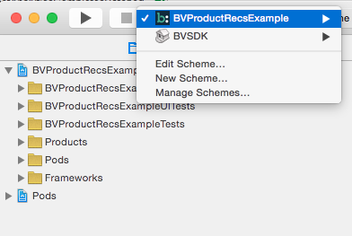

Product Recommendations, Advertising, Curations, and Conversations all come with example projects, which demonstrate how to properly implement these modules. Specifically:
Conversations has three example applications:
For any example project:
Examples/ directory/pod install and open the corresponding .xcworkspace file with Xcode.AppDelegate file, and set your API keys and clientId in the didFinishLaunchingWithOptions: method.Select the build target from the project's menu bar:
